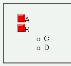
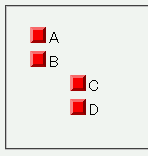

ul要素等が入れ子になっている状態で、親要素にlist-style-imageプロパティでリストマーカーに画像を指定すると、子孫要素で list-style-image: none; を指定しても親要素の指定を継承してしまう。
<ul style="list-style-image:url(../img/img02.png);"> <li>A</li> <li>B<ul style="list-style-image:none;"> <li>C</li> <li>D</li> </ul></li> </ul>
親のul要素内は画像をマーカーに用い、子のul要素内はデフォルトのマーカーを用いるように指定しました。
WinIE6.0での表示
Opera6.05での表示
Opera6.05ではスタイルシートの指定を無視した継承が行われます。Opera7.0では標準・互換モードともに none を認識します。